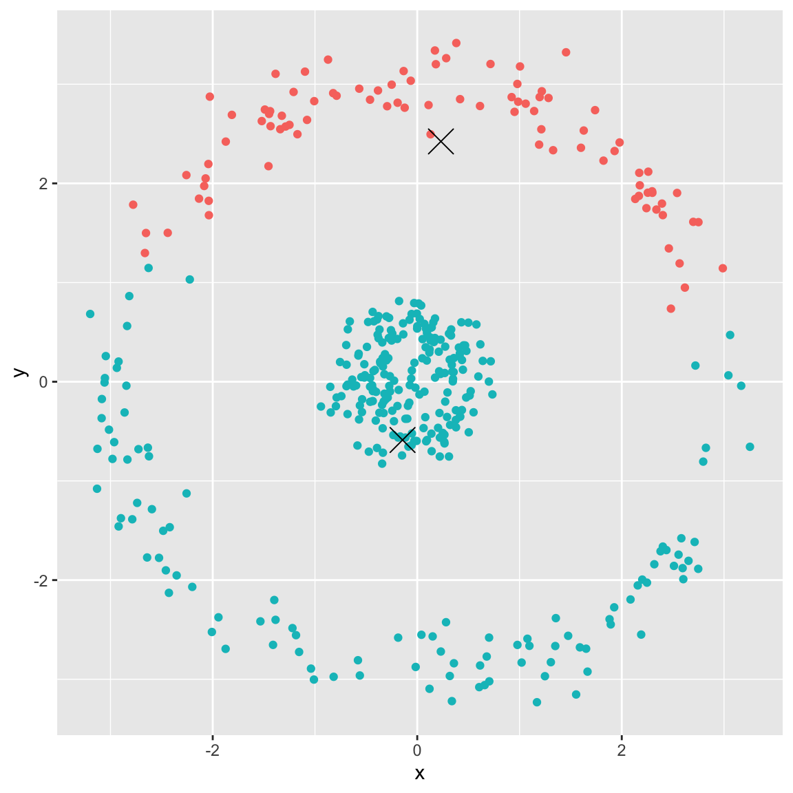

k-means Clustering
4/27/23
Housekeeping
Unsupervised learning
What is unsupervised learning?
Shifting gears: instead of supervised learning (e.g. regression and classification), we will now turn to unsupervised learning
We only observe the features \(X_{1}, X_{2},\ldots, X_{p}\)
- We do not care about prediction because we have no response \(Y\)!
Example: a search engine might choose which search results to display to a particular individual based on the click histories of other individuals with similar search patterns
Real-life example
Marine eco-provinces
Unsupervised learning goals
Discover interesting things about the predictors/features
Can we discover subgroups among the variables or among the observations?
Is there an informative way to visualize the data?
Two common methods:
Clustering: broad class of methods to discover unknown subgroups in your data
Principal components analysis (PCA): a tool used for data visualization or data pre-processing, often before supervised techniques are applied
- PCA is beyond the scope of this course (but you can try using it for your final project if you understand eigenvectors!)
Challenges
Subjective; no clearly defined goal for analysis
How to assess results obtained? No way to validate!
Despite challenges, unsupervised learning methods are of growing importance
Clustering
We want to find subgroups or clusters in a data set
This means separating observations into distinct groups such that:
observations with each group are similar
observation across groups are different
How to define “similar” and “different”?
Two main methods: K-means clustering and hierarchical clustering
- Apologies for another K!
K-Means clustering
K-Means clustering
We seek to partition/divide the observations into a pre-specified number of clusters \(K\)
These clusters are distinct and non-overlapping
Just like in \(k\)-fold CV or KNN, we first specify \(K\).
- Then the algorithm will assign each observation to exactly one of the \(K\) clusters
Example 1: US Arrests
USArrestsdata inRcontains statistics about arrests per 100,000 residents for \(\color{blue}{\text{Murder}}\) in each of the 50 US states in 1973. Also given is the percent of the population living in urban areas \((\color{blue}{\text{UrbanPop}})\).In the following slide, I apply \(K\)-means clustering with different values of \(K\) to group the observations (states)
Color of each observation indicates the cluster to which each state was assigned (coloring is arbitrary)
Example 1: US Arrests
Example 2: simulated data
Simulated data with \(n = 60\) observations in 3-dimensional space, with three true clusters
The following plots show the results of applying \(K\)-means clustering with different \(K\)
- Color corresponds to cluster
Example 2: 2-means
Example 2: 3-means
Example 2: 5-means
Details of \(K\)-means clustering
Procedure results from simple and intuitive mathematical problem. Start with notation
Let \(C_{1}, \ldots, C_{K}\) be the sets containing the indices of the observation in each cluster. These sets satisfy two properties:
\(C_{1} \cup C_{2} \cup \ldots \cup C_{K} = \{1, \ldots, n\}\), i.e. each observation belong to at least one of the \(K\) clusters
\(C_{k} \cap C_{k'} = \emptyset\) for all \(k \neq k'\), i.e. the clusters are non-overlapping
For example, if the 10-th observation is in the second cluster, then \(10 \in C_{2}\)
- More generally: if observation \(i\) is in \(k\)-th cluster, then \(i \in C_{k}\)
Details of \(K\)-means clustering (cont.)
Good clustering is at the heart of \(K\)-means clustering procedure: we want the within-cluster variation to be as small as possible
Let \(\text{WCV}(C_{k})\) denote the within-cluster variation for cluster \(C_{k}\). Tells us the amount by which observations within a cluster are different from each other
\(K\)-means clustering solves the problem: \[\min_{C_{1}, \ldots, C_{K}}\left\{\sum_{k=1}^{K}\text{WCV}(C_{k}) \right\}\]
What does this mean in words?
- This is called the “objective”
How to define within-cluster variation?
Once again, need to define
Most common choice is (pairwise) squared Euclidean distance: \[\text{WCV}(C_{k}) = \frac{1}{|C_{k}|} \sum_{i, i' \in C_{k}} \sum_{j=1}^{p} (x_{ij} - x_{i'j})^2\] where \(|C_{k}|\) is the number of observations in the \(k\)-th cluster
K-means clustering: Algorithm
Randomly assign each observation to one of the \(K\) clusters. This is how we initialize the cluster assignments.
Iterate the following until the cluster assignments stop changing:
- For each cluster \(k = 1,\ldots, K\), compute the cluster centroid. The \(k\)-th cluster centroid is the vector of the \(p\)-feature means for observation in \(C_{k}\)
- Assign each observation to the cluster who centroid is closest, defined using Euclidean distance here
In-class example
Details on algorithm
This algorithm is not guaranteed to solve the minimization problem exactly
There are almost \(K^n\) ways to partition all \(n\) observations into \(K\) clusters
The algorithm on previous slide provides a local optimum, i.e. a pretty good solution to the optimization problem!
Important implementation concerns!
Because the algorithm finds a local optimum, our results will depend on the initial cluster assignments in Step 1
Therefore, it is important to run the algorithm multiple times using different random initializations
Then select the best solution (i.e. the one with smallest \(\sum_{k=1}^{K}\text{WCV}(C_{k})\))
Example 3: Simulated data
Generated \(n=50\) observations with two features, evenly split between two true clusters
Perform K-means clustering performed four times on the same data with \(K = 3\), each time with different random initialization.
Above each plot is the value of the objective
Three different local optima were obtained (three unique objective values)
One of the local optima resulted in a smaller value of the objective, and therefore provides better separation between the clusters
- Two of the initializations results in ties for best solution, with objective value of 58.145
Example 4: seeds data
Recall the
seedsdata with three varieties: Kama, Rosa, and CanadianRun \(K\)-means with \(K = 3\), using features
compactnessandarea

- If I didn’t know there were truly three classes, how would I choose \(K\)?
Elbow method
Popular heuristic to determine the optimal value of \(K\)
Fit \(K\)-means several times with different \(K\) values, and plot the objective values against the number of clusters \(K\)
Graph will (hopefully) rapidly change at a point and thus create the elbow shape.
The \(K\) value where elbow “bends” and begins to run parallel to x-axis is taken to be optimal
What is the optimal \(K\) for the
seedsdata?
Unfortunately, it is not always obvious where the curve bends
Where k-means fails
Example 5: spherical data
Generated the following data:
- Running \(K\)-means with \(K=2\)
Example 6: differing densities
Generated three clusters with differing densities (number of observations), \(n = 20, 100, 500\)
- Fit \(K\)-means with \(K = 3\). What’s happening?

Similar model: K-medoids
\(K\)-medoids: very similar to \(K\)-means clustering
\(K\)-means chooses centers of clusters as the average between the points in the cluster, thus the centroid is usually not one of the observed points
\(K\)-medoids chooses one of the observation points to be the center
Like mean vs. median
Allows for greater interpretability of the center clusters compared to \(K\)-means
K-medoids vs K-means
\(K\)-medoids can be used with arbitrary dissimilarity measures, whereas \(K\)-means generally requires Euclidean distance for efficient solutions
\(K\)-medoids minimizes the sum of pairwise dissimilarities, whereas \(K\)-means attempts to minimize sum of (squared) Euclidean distances
- Thus, \(K\)-medoids is more robust to noise and outliers
Better initialization?
Is randomly initializing the most intelligent way to run the algorithm?
What are some possible issues of randomly initializing?
Minimizing the objective (smallest \(\sum_{k=1}^{K}\text{WCV}(C_{k})\)) gets at the goal of observations within a cluster being as similar as possible
- But it doesn’t do much for the goal of making sure the each cluster is distinct
How might we encode this notion of “far away” clusters when we initialize?
- More commonly used initialization method: k-means++
Drawbacks
Does not take into account the different densities of each cluster
Number of clusters in the data \(K\) is fixed and assumed known
Relies on minimizing within-cluster variance (i.e. sum of squared Euclidean distance), which is not always appropriate
- Does not handle categorical features well
Lack of interpretation of clusters
Can be slow for large \(n\)
Summary
Considerations
Should the features be standardized?
- This is always a question when distances are involved!
What should \(K\) be?
How do we validate the clusters we obtained?
- Are we truly discovering subgroups, or are we simply clustering the noise?
Do all observations belong in a cluster? Or are some actually “outliers”
Clustering methods generally not robust to small changes in data
Recommendations
Recommend performing clustering with different choices of \(K\), and looking to see if/which patterns consistently appear
- Elbow method
Because clustering not robust, maybe we consider clustering subsets of the data
Caution: be careful about how the results of a clustering analysis are reported. These results should not be taken as the absolute truth about a data set!!!